ECON 1116 • Principles of Microeconomics • Chapter 19
Platforms, Networks & the Digital Economy
In January 2025, TikTok went dark. 170 million Americans — half the country — lost their feeds overnight. Reels and Shorts were one tap away. So why couldn’t anyone just switch?
Dr. Richeng Piao
Department of Economics
Northeastern University
Learning Objectives
19.1
Explain network effects and how they create tipping points
19.2
Analyze two-sided platforms & the chicken-and-egg problem
19.3
Evaluate platform pricing — the take rate, subsidies, freemium
19.4
Assess network strategies — teasers, lock-in, versioning, bundling
19.5
Evaluate data as a competitive input — the data flywheel
19.6
Analyze how we regulate digital platforms — and the trade-offs
Quick Recall — Chapters 11, 12 & 13
In Chapter 11 a monopolist had market power. Name one source of it — what kept rivals out?
In Chapter 12 we said leaving Apple’s ecosystem was costly. What did we call those costs?
Why do you use the same messaging app as your friends, even if a “better” one exists?
Discuss with your neighbor — 90 seconds.
You’ve Already Used Three Platforms Today
Before you walked in, you opened at least one of these — maybe all three. Each is worth more because everyone else is on it too.
You didn’t choose these because they’re the best — you chose them because everyone else is already there. That pull is what we model today.
Hook — The Night TikTok Went Dark
January 2025: a Supreme Court ruling forced TikTok offline in the U.S. For a few hours, the feeds vanished.
170M
U.S. users — half the country
2
near-identical rivals: Reels, Shorts
$14B
price Oracle-led group paid for U.S. ops
~0
who fully switched apps
Your feed wasn’t an algorithm — it was a social graph of creators, jokes, and communities that can’t be rebuilt overnight. That stickiness is a network effect, and it’s the engine of the whole digital economy.
Before we model it
Types of Networks
Three ways people get connected — physical, virtual, and social.
Physical Networks — Built on Infrastructure
Connected by a physical structure you could point to.
Fiber optics — the cables behind telephone & internet networks.
Satellites — GPS and global communication networks.
Transportation routes — airline hub-and-spoke systems.
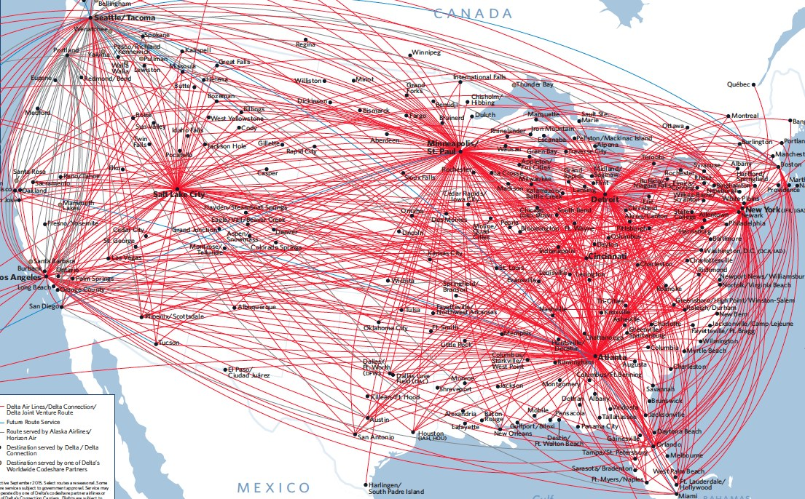
Delta’s route map — hubs concentrate routes, so more cities are reachable per flight.
Massive fixed costs + economies of scale push these toward a few big players (Ch 11) — but the digital economy lives in the next two types.
Virtual Networks — Same Brand, Same Ecosystem
Connected by groups of people using the same brand of a good or service.
Gaming console & network
More players to match with, more developers making games for the platform.
Mobile phone & ecosystem
iMessage, App Store, AirDrop — the brand keeps your devices in one world.
Software & search engines
More users → more data → better results → more users.
Value rises with the installed base — direct and cross-side network effects. This is the chapter’s home turf.
What Is a Network Good?
A network good is a good or service whose usefulness depends on the existence of a physical, virtual, or social network.
Examples you carry every day:
Smartphones
Streaming apps
VR headsets
Voice assistants
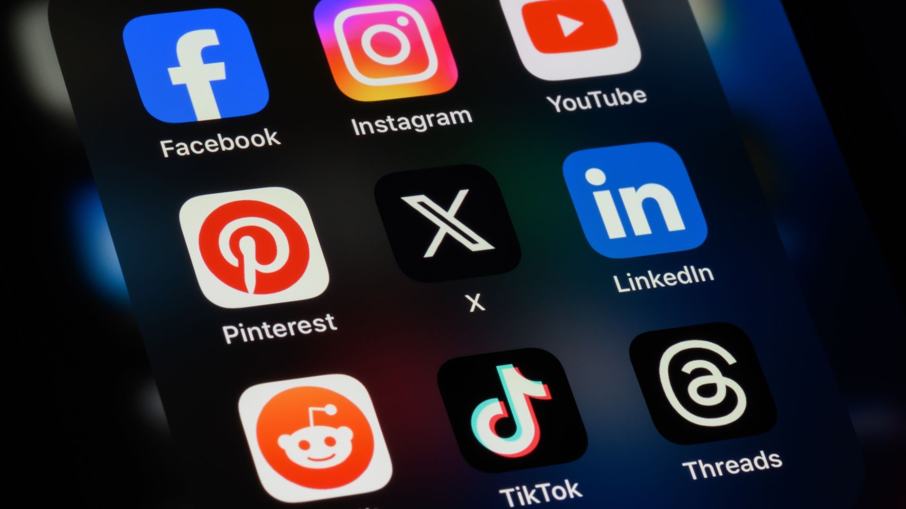
Strip away the network and the good loses its value — a phone with no one to call, a feed with no one to follow.
Section 1 · LO 19.1
Network Effects: Why Size Matters
The value of a product depends on how many other people use it.
The Mechanism: Network Externality
Each extra user creates a positive external benefit for everyone else — a network externality.
The twist: unlike a normal externality, it benefits all users — existing and potential — raising the whole network’s value and pulling in even more demand.
Diminishing returns: the 100th user adds far more than the 100-millionth.
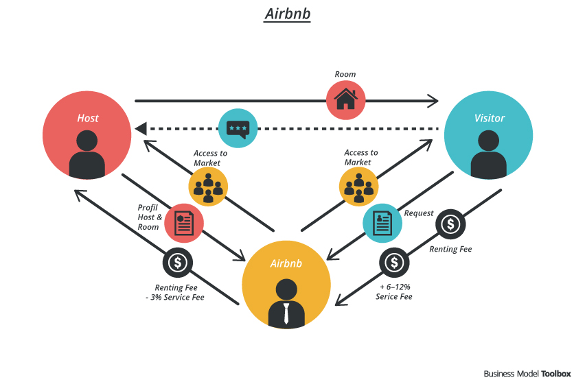
Airbnb: more hosts attract more guests — and vice versa.
Because the benefit spills onto others, growth feeds on itself — the engine behind tipping points.
Two Flavors of Network Effect
Network effect — the value of a good to each user rises as more people use it. (Older texts: “network externality.”)
Direct — same side
Users benefit from more users like them. Every friend who joins WhatsApp makes it more useful to you.
Cross-side (indirect)
One side benefits from the other side. More Airbnb hosts attract more guests — and vice versa.
A gaming console has both: more players (direct) and more developers (cross-side).
Spotting the Effect in the Wild
WhatsApp — pure direct. Your experience improves every time a friend joins.
Airbnb — pure cross-side. Hosts don’t want more hosts; they want more guests.
PlayStation — both. More players to match with, more developers making games.
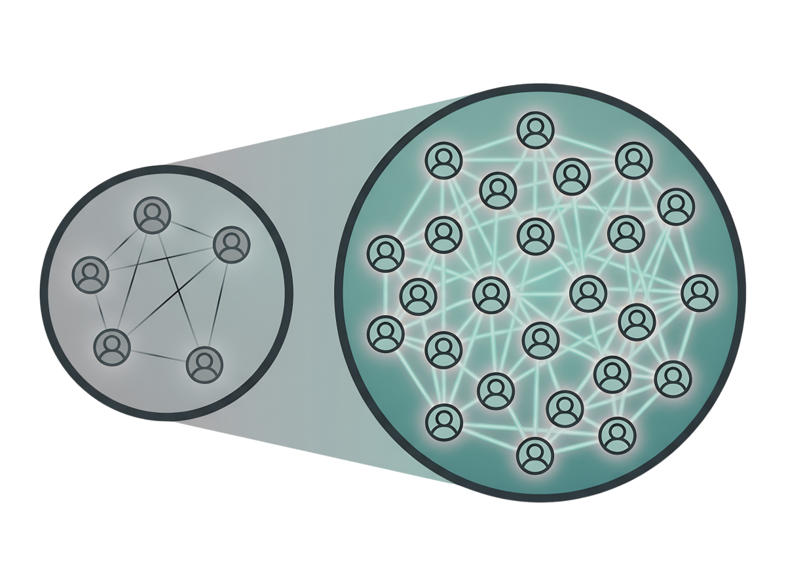
Example — Free Music, Then Sales
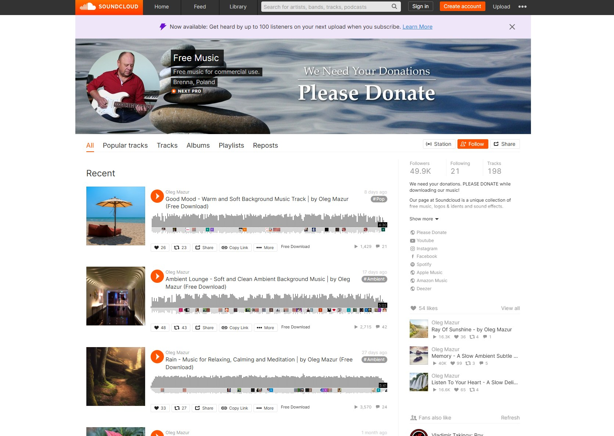
Aspiring musicians often release new songs free on streaming sites.
As a track gains listeners, each new fan makes it more likely to be shared, playlisted, and discovered — a network effect.
Popularity compounds — and sales (concerts, merch, licensing) rise with the fan network.
Give the good away to grow the network, monetize once it’s large — the same playbook as Google Photos.
Watch — Rwanda’s Drone Highway
A network that delivers blood to remote clinics in minutes. As you watch, ask: who benefits beyond the buyer?
The External Benefit of a Network
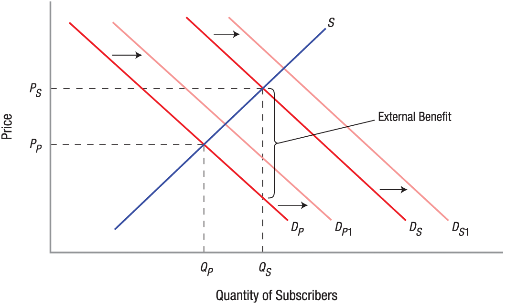
Each new subscriber benefits everyone already on the network — a benefit their own demand curve ignores.
So demand shifts right (DP→DS): equilibrium subscribers rise QP→QS and price PP→PS.
The gap between DP and DS is the external benefit — value the network creates for others.
Rwanda’s drone network is this gap made vivid — the benefit reaches whole communities, not just the buyer.
Start-Up Lab — an AI Study Network for Huskies
1 The need. It’s 2 a.m. before an exam — tutoring centers are closed and help is scattered across GroupMe, Discord, and Reddit.
2 HuskyHive. An AI tutor trained on course material answers instantly 24/7 — and matches students into peer study groups.
HuskyHive in use — the external benefit (last slide) is its growth engine.
Network good
More Huskies → more data → smarter AI → more Huskies.
Externality
Each new Husky raises value for all — even future ones.
Diminishing returns
The 100th Husky adds more than the 100,000th.
Reverse effect
Graduates leaving shrink the network for everyone.
Should HuskyHive charge from day one, or give it away to win the network first? — the question every network start-up faces.
Section 1 · continued
Network Demand
Why a network good’s demand curve rises before it falls — and how firms price along it.
Fixed-Capacity Network Good
Vertical short-run supply. Capacity is capped by the firm’s fixed investment and expands only in large increments (S0 → S1) — classic case: an airline with a fixed number of planes.
Each capacity level has its own demand curve. A bigger network is worth more, so the network effect pushes demand out (D0 → D1) — partly offset by the price effect.
HuskyHive: its servers & AI compute are the fixed capacity — only so many Huskies can be served at once. Scaling means adding a whole new cluster: one big lump.

Airlines add planes in lumps; HuskyHive adds server clusters in lumps — both face a vertical short-run supply that jumps, then holds.
The Unique Network Demand Curve
Value rises as more people subscribe, so the curve has two parts:
1. Upward (Core Users). Network effect > price effect. HuskyHive’s early Huskies seed the Q&A library and aren’t price-sensitive — as they pile in, price rises.
2. Downward (Casual Users). The network matures, the effect weakens (diminishing returns), price effect > network effect — HuskyHive’s exam-crammers join once the price drops.
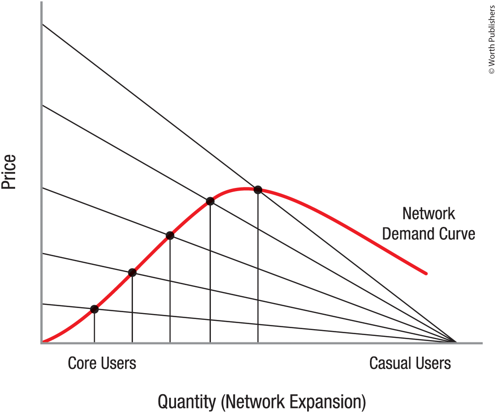
HuskyHive climbs the curve on its core Huskies, then rides it back down by opening up to casual users.
Pricing Over the Network Life Cycle

1. New network. Price low to attract the first users.
2. Growing. Prices rise — a good used by more people is worth more.
3. Mature. Prices fall to sell a greater quantity.
Network Pricing in Practice — Google

1. Freemium. Free search (1998) builds the largest possible user network — the core-user phase.
2. Subsidize-and-extract. Ads (AdWords, 2000): users stay free, paying in attention; advertisers pay the cash. Two-sided — subsidize one side, extract from the other.
3. Charge the user. With a locked-in ecosystem, bill users directly too — Google One storage/photos, YouTube Premium & Music, Workspace email.
Google — Bare Results → Monetized Search

As the network matured, bare organic results gave way to ad-laden results — the implicit price of a free, ubiquitous network good.
Subsidize → extract → then bill the user. Ads were only stage two. Once you live inside Gmail, Drive, Photos, and YouTube, Google also charges directly — Google One, YouTube Premium & Music, Workspace — just like a normal subscription market.
Metcalfe’s Law: Value Compounds
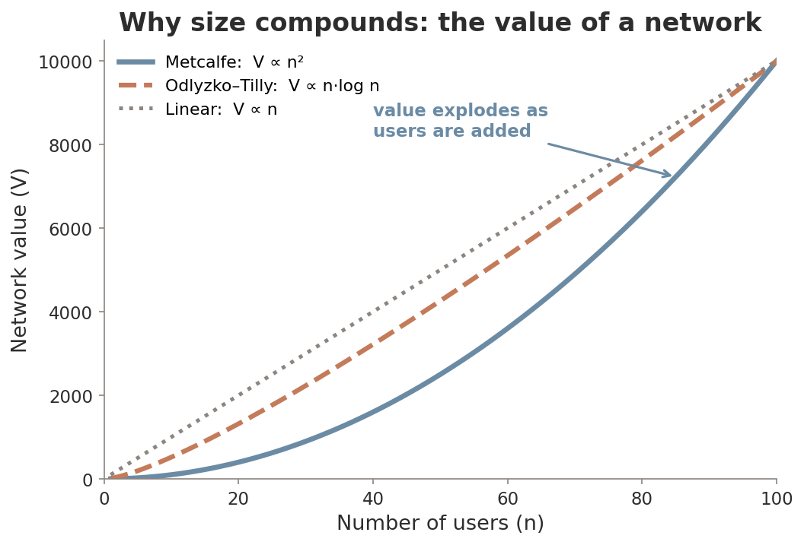
Metcalfe’s Law: value grows with the square of users — n people make n(n−1)/2 possible connections.
Double the users → roughly 4× the value. That convexity is what makes a leader pull away.
The critique (Odlyzko–Tilly): you don’t talk to everyone — value is closer to n·log n. Still super-linear.
Network Good
Market Equilibrium
Where a network good settles — and why leadership flips so fast.
Market Equilibrium for a Network Good
- Equilibrium on the downward slope: usually reached on the downward-sloping part of the network demand curve, after most network effects are realized (point d, where demand meets MC).
- Volatility: not all network goods reach or sustain equilibrium — expansion and decline can be rapid.
- Economies of scale: large fixed costs (software, infrastructure) + low marginal costs (one more user ≈ free) → big economies of scale, like monopolies and oligopolies.
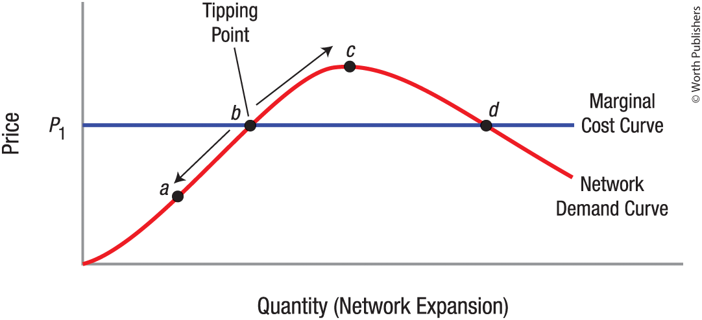
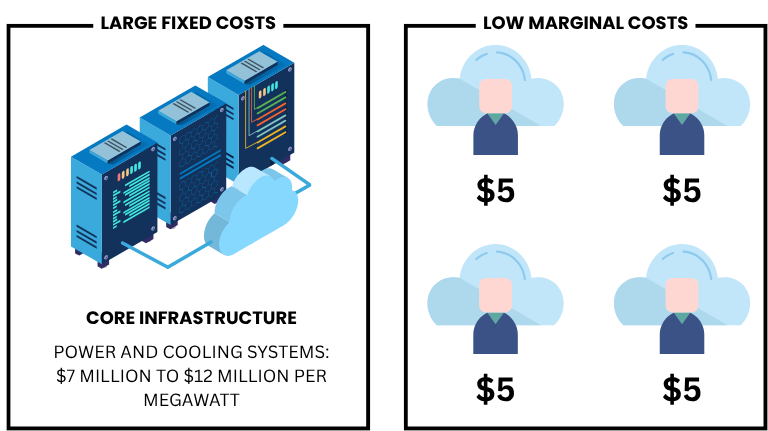
Finding an Equilibrium
Equilibrium = the downward-sloping network demand curve meets MC (point d).
Tipping point (critical mass) — point b: the quantity at which network effects are strong enough to keep the network growing. It must expand from the origin to b to sustain growth.
Vicious cycle: fails to reach the tipping point → users leave → value falls for others → sharp decline and likely failure.
Virtuous cycle: past the tipping point → network effects push demand right → more value → expansion until equilibrium.
Mark Zuckerberg’s 2004 Interview
CNBC, 2004 — Facebook is a network good racing for its tipping point: build the university network first, monetize later.
Tipping Point — Westmatch vs Facebook
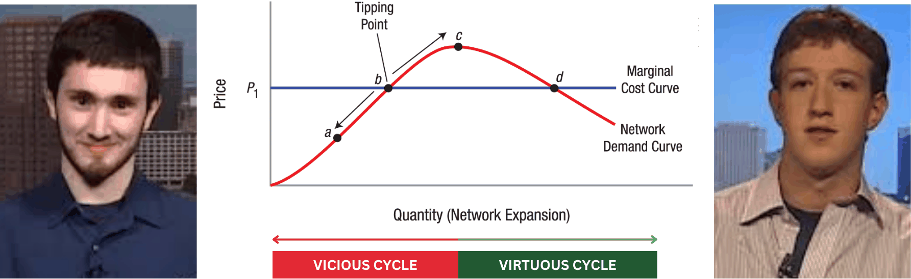
Westmatch’s strategy
Romantic matchmaking · detailed questionnaires · algorithmic compatibility · per-university customization · monetize via licensing.
Facebook’s strategy
A specific community need · university connections · profiles & identity · social discovery · rapid growth & engagement.
Facebook chased network growth first and crossed the tipping point (virtuous cycle); Westmatch monetized early and never reached critical mass.
Virtuous and Vicious Cycles — Real Cases
VICIOUS

Vicious: below the tipping point, users leave → value falls for the rest → collapse (Google+ → 2019 shutdown; MySpace, Friendster, Vine).
Virtuous: past the tipping point, scale compounds → more value → more users (Amazon Prime; ChatGPT & AI assistants).
VIRTUOUS

Same feedback loop — the sign flips at critical mass. Often winner-take-all.
Market Leaders Often Lose Dominance Quickly
- Monopoly tendency: network goods often tip toward monopoly as users consolidate onto one platform.
- But short-lived: even dominant firms like Friendster and MySpace declined fast once the network effect reversed. Have you even heard of them?
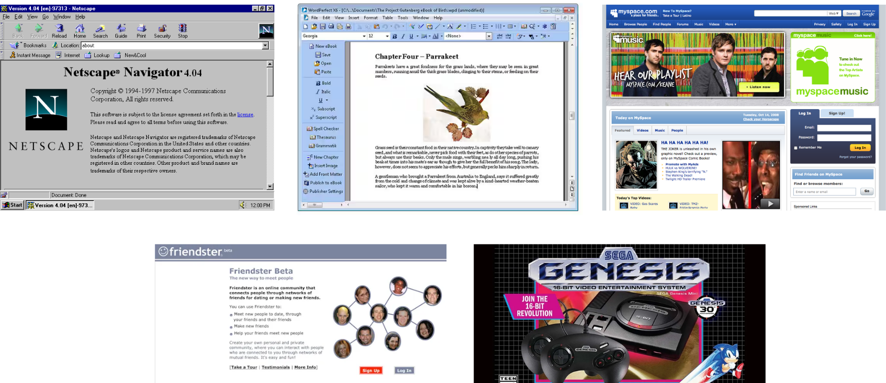
Network Goods: Previous → Current Market Leaders
| Industry | Previous market leaders | Current market leader |
|---|---|---|
| Social networking | Friendster (2002–04), Myspace (2005–08) | Facebook (2009–) |
| Internet search | AltaVista (1997–2000) | Google (2001–) |
| Internet browsers | Netscape (1995–98), Internet Explorer (1999–2008), Firefox (2009–11) | Google Chrome (2012–) |
| Internet service providers | America Online (1995–2003), AT&T DSL (2004–12) | Xfinity (2013–) |
| Wearable technology | Fitbit (2013–16) | Apple Watch (2017–) |
| Voice assistants | Apple Siri (2011–15) | Amazon Alexa (2016–) |
| Tablets / netbooks | HP Mini (2008–09) | Apple iPad (2010–) |
Table 1 — in every network market, today’s leader displaced a former one that failed to keep the network growing.
Misconception: “The Best Product Always Wins”
In network markets, the product that reaches the tipping point first often wins — even if a rival is technically better.
QWERTY (1870s)
Designed to slow typists down and stop jams — still dominates 150 years later. Pure lock-in.
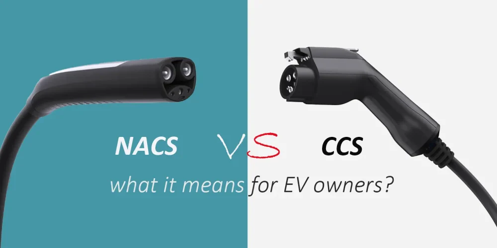
Tesla NACS (2025)
Won the U.S. charging standard not on merit but on installed base: 7,300 stations, automakers with 75% of EVs adopted it.
Path dependence: history and timing, not just quality, decide the winner.
Your Turn — Will AI Chatbots Tip?
ChatGPT’s share fell from 87% → 68% in a year as Gemini and Claude grew. Users freely run several models for different tasks. What does this most suggest?
45 sec to vote
Answer: B — Weak Lock-In, So It May Not Tip
Falling share + near-zero switching cost (users run several models per task) push against tipping — more like the differentiated streaming wars than search, which tipped decisively to Google.
Trap C: there are network effects in AI — user feedback trains the models and developers build on the APIs. Tipping could still happen if deep OS/enterprise integration raises switching costs.
Section 2 · LO 19.2
Platforms & Two-Sided Markets
If the product is free, where does the money come from?
Platform vs. Pipeline
Platform — a business that creates value by matching two or more user groups, not by producing a good itself. An intermediary, not a maker.
Pipeline (traditional)
A carmaker buys steel → builds cars → sells them. Value flows one direction.
Platform (Uber)
Owns no cars, employs no drivers. It matches riders and drivers — scale with few staff.
Coase (Ch 9): firms exist to cut transaction costs. Platforms take that to the extreme — cut the cost of finding and trusting a match.
Price Structure Beats Price Level
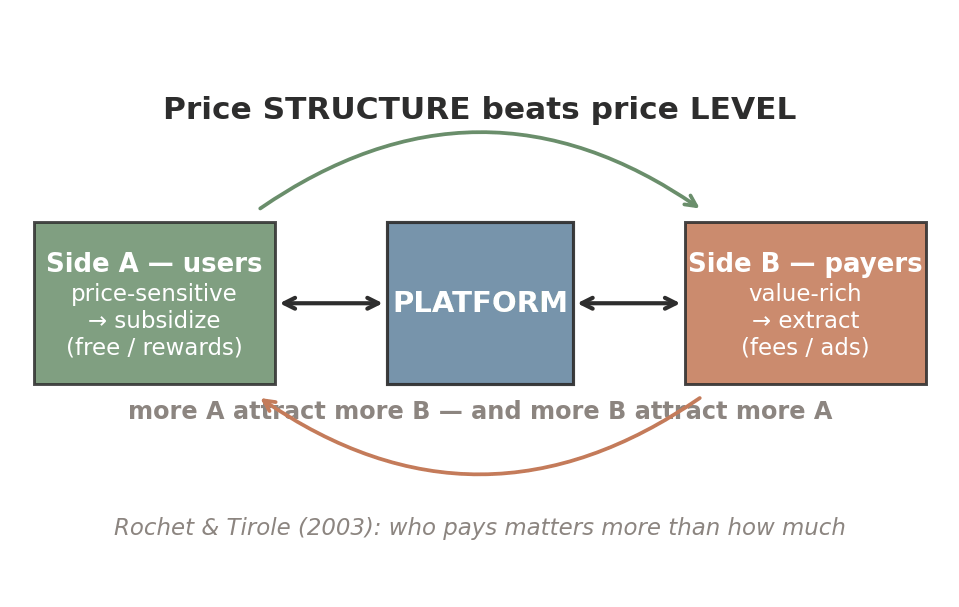
Rochet & Tirole (Tirole, 2014 Nobel): in a two-sided market, who pays matters more than how much.
Subsidize the price-sensitive side (free search, free maps), extract from the side that gets measurable value (advertisers).
Same logic: nightclub “ladies’ night,” credit-card rewards funded by 2–3% merchant fees.
The Chicken-and-Egg Problem
Riders won’t come without drivers; drivers won’t come without riders. A platform needs both sides at once — but each waits for the other.
Subsidize a side
Uber paid drivers guaranteed hourly rates before riders showed up.
Borrow a network
Threads launched off Instagram’s 2B users → 275M in months.
Start tiny
Airbnb began renting air mattresses in the founders’ apartment.
Solve the coordination problem and the cross-side flywheel takes over.
Lock-In: Why You Don’t Leave
Sellers on Amazon
Review history & ranking don’t transfer. Running on two marketplaces (multi-homing costs) is rarely worth it — so they stay despite rising fees.
Consumers (psychological)
The iMessage “green bubble” — a trivial color cue — creates real social pressure to stay in Apple’s world.
Switching costs (Ch 12) are the glue that turns a network lead into durable market power.
Case — Why Nobody Left Google Photos
Launched 2015 with free unlimited photo storage — everyone poured their libraries in. On June 1, 2021 Google capped it and started charging.
1B+
users by 2019 — ~4 trillion photos stored
15 GB
free cap after June 2021 — then you pay
~0
share who actually left for a free rival
Switching cost (Ch 12)
Exporting 15 years of memories, albums, and face-groups — then re-uploading elsewhere — is painful, so a free competitor isn’t worth the move.
Network & ecosystem
Shared family albums and the people you tag are already here, woven into Android & Gmail — a cross-side pull rivals can’t copy.
“Free unlimited” was the customer-acquisition phase. Win the tipping point, let switching costs harden — then raise the price. Users stay anyway.
Section 3 · LO 19.3
Platform Pricing & the Take Rate
The toll the platform charges on every match it makes.
The Take Rate: The Platform’s Cut
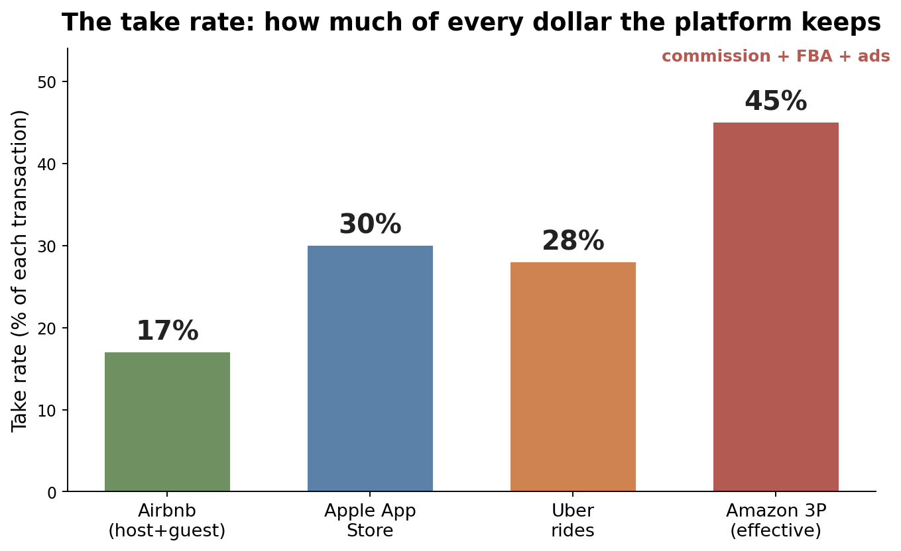
Take rate — the share of each transaction the platform keeps. Also: commission, rake.
Distinct from GMV (Gross Merchandise Volume = total value of transactions processed).
Amazon’s ~45% bundles commission + fulfillment + mandatory ads — far above its posted fee. Take rates rise once both sides are locked in.
Four Ways Platforms Price
Subsidize-and-extract
Free for one side, paid for the other. Google: consumers free, advertisers pay.
Freemium
Free basic tier builds the network & data; premium at $11.99 (Spotify, near-zero MC).
Peak-load (surge)
Higher prices at peak demand. Uber surge raised welfare +2.15% (Castillo 2025).
Intertemporal
$70 game now for the impatient → $30 later for the patient. Time-based price discrimination.
All four are variations on price discrimination (Ch 11) across sides, users, or time.
Peak-Load (Surge) Pricing
Peak-load pricing: charge more when demand is highest — the firm segments the market by time. Higher Saturday-night vs matinee tickets, off-season Airbnb beach deals, ride-share surge at concerts.
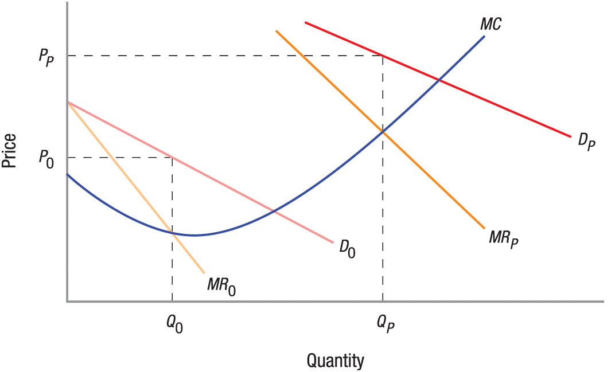
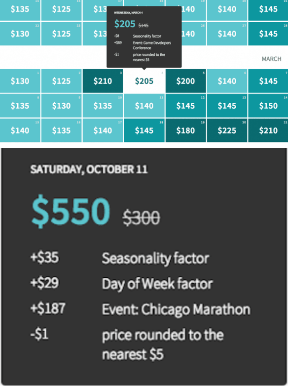
Same capacity, demand-based price — Airbnb’s algorithm adds a seasonality + event factor ($300 → $550 on marathon weekend). Surge rations scarce supply to the highest-value users.
The Streaming Wars Are Platform Economics
Subsidize-and-extract: Disney+ launched at $6.99 (below cost) to grab subscribers → raised to $18.99 by 2025.
Versioning: Netflix runs 3 tiers ($7.99 ads / $17.99 / $24.99) — the ad tier makes it a two-sided market too.
Bundling: Disney+/Hulu/ESPN+ and Comcast StreamSaver cut churn by packaging services.
Lock-in: Netflix +$1 to $18.99 with record-low 2.17% churn — your watchlist doesn’t transfer.
The oligopoly of Chapter 13 grew up into a set of locked-in content platforms.
Section 4 · LO 19.4
Competing in Network Markets
How do you build a new network — or defend an old one?
Lock-In: Defending the Castle
Lock-in — high switching costs keep users even when a better option exists. A moat and a source of market power.
Switch from iPhone to Android and you lose iMessage, iCloud photos, Apple Watch pairing, purchased apps. Each device you own raises the next switch’s cost.
The DOJ’s 2024 suit alleges Apple deliberately degrades cross-platform messaging to deter switching.
The fight: is the moat earned (a great product) or engineered (deliberate friction)? That line is where antitrust looks.
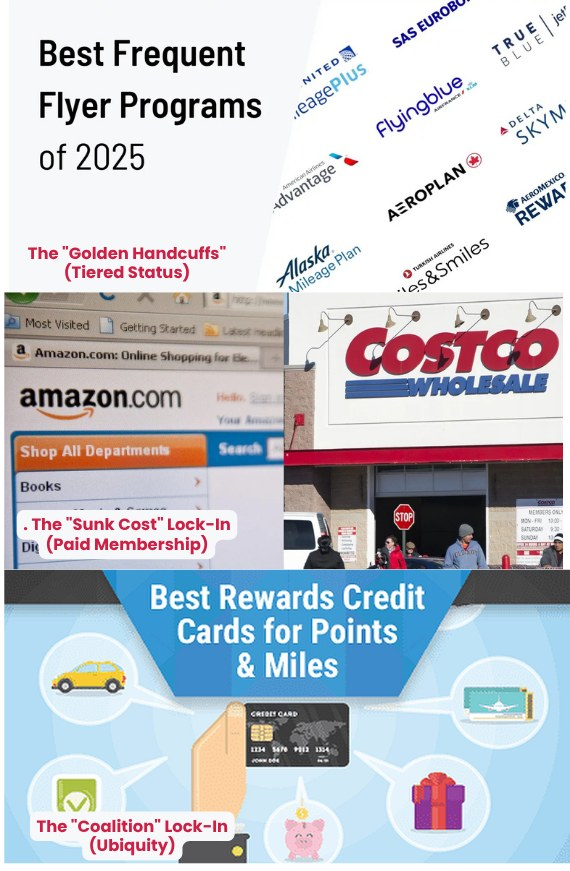
Three flavors of lock-in: tiered status · sunk-cost memberships · coalition rewards.
Versioning: A Menu That Sorts Buyers
Versioning — offer tiers at different prices so buyers self-select by willingness to pay. (Second-degree price discrimination, Ch 11.)
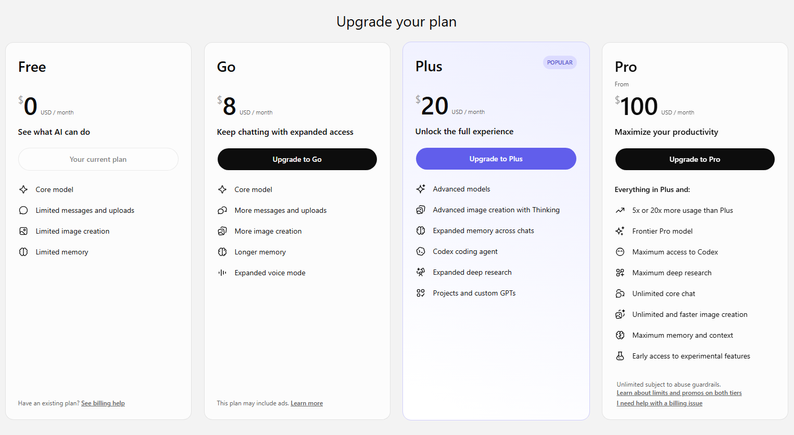
ChatGPT’s ladder. Free → Plus ($20) → Pro ($200). The same model, gated into tiers, so heavy users self-select into the expensive plan.
The marginal cost of the premium tier is ≈$0 — the price gap is pure market segmentation, not cost.
Bundling: Sell Them Together
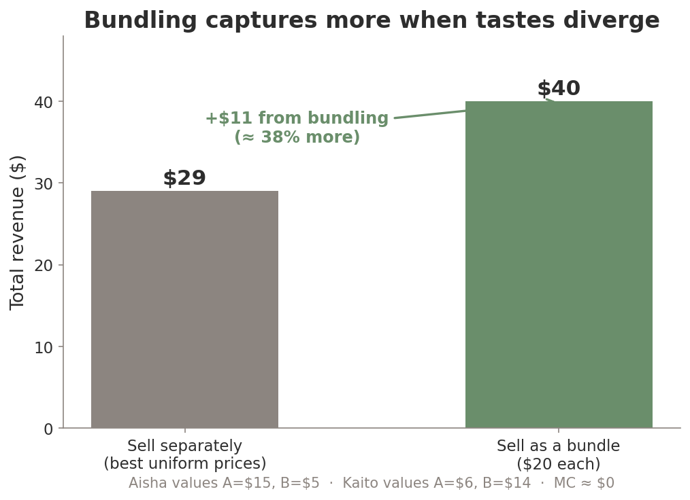
A streaming firm sells two channels — a Movies pass and a Sports pass:
| Values | Movies | Sports | Both |
|---|---|---|---|
| Aisha (film buff) | $15 | $5 | $20 |
| Kaito (sports fan) | $6 | $14 | $20 |
Sell separately
$29
Bundle at $20
$40
Their tastes diverge (each loves a different channel) — so one $20 bundle captures both. Bundling fails when tastes are aligned.
You Try — Bundling Problem
Maya values game X at $70, game Y at $30. Ben values game X at $30, game Y at $65. Marginal cost = $0. The firm can sell X and Y separately (single price each) or as a bundle. (No price discrimination.)
Selling separately
- Most the firm can earn on game X = $____
- Who buys game X?
- Most the firm can earn on game Y = $____
- Who buys game Y?
- Most total profit selling separately = $____
Bundling the two games
- The firm can sell the bundle for $____
- How much total profit does the firm earn?
- How much additional profit from bundling?
Case Study: The Browser Wars
1995 — Netscape
dominant
IE bundled with Windows (90%+ of PCs)
leverage
~3 years later
IE > 90%
A platform that controls one layer (the OS) can leverage it into an adjacent market (the browser) via bundling. DOJ sued 1998; 2001 settlement forced API-sharing.
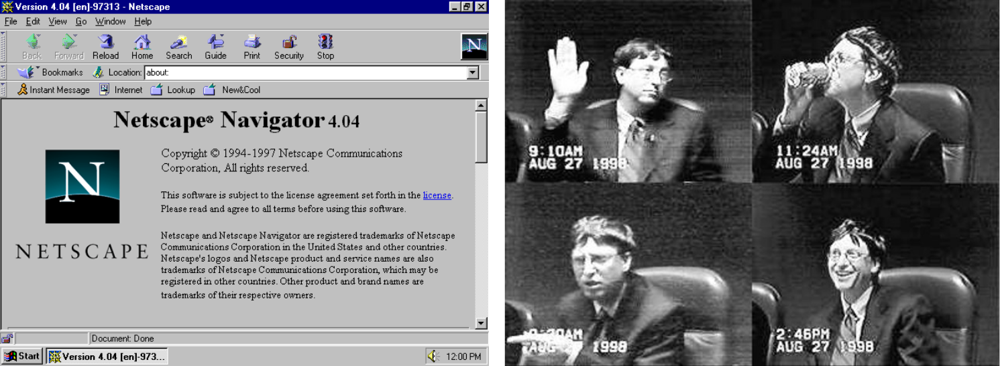
Exactly the concern driving today’s cases against Google and Apple — and the EU’s interoperability rules.
Your Turn — Name the Strategy
A new streaming service offers 3 free months, then bets you won’t cancel because your watchlist and profiles now live there. Which two ideas are at work?
45 sec to vote
Answer: A — Teaser + Lock-In
The 3 free months are a teaser (below-cost acquisition to push past the tipping point); the watchlist and profiles you’d lose by leaving are lock-in (switching costs). The build-then-defend pair.
Trap D: “essential facility + interconnection” is the regulation vocabulary from the next section, not a firm’s growth strategy.
Section 5 · LO 19.5
Data as an Economic Input
When the service is free, you — your data — are the product.
The Data Flywheel
Data flywheel — more users → more data → better algorithms → more users. A self-reinforcing loop.
Meta, Q2 2025: advertiser net-dollar retention hit 130% (the average advertiser spent 30% more) as ML targeting improved on more data.
~$170B in 2025 ad revenue — nearly all from monetizing user data.
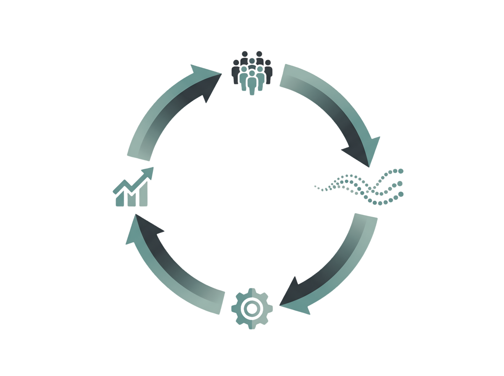
Data Moats — and Their Limits
Economies of scale
Building a model costs a fortune; processing one more user’s data costs almost nothing. Favors incumbents — a data moat.
Diminishing returns
The 10-millionth search query improves Google far less than the 10-thousandth. Past some scale, the moat thins.
Data moat — proprietary data that improves the product and raises entry barriers. Powerful, but not infinite.
Data Becomes a Commodity
As AI models hunger for training data, communities discover they’re sitting on a goldmine:
$203M cumulative licensing — ~$60M/yr from Google, ~$70M/yr from OpenAI for 17 years of human posts.
Stack Overflow
Traffic fell 76% as AI assistants replaced it — so it pivoted to licensing its verified knowledge base.
The communities built deep data moats — now among the most valuable inputs of the AI era.
Privacy as a Cost — & the New Antitrust
Privacy is a real cost
Personalized service vs. surveillance. FTC (2024–25): 250+ firms used surveillance pricing. Users underweight the long-run cost of data extraction.
Economist at Work — Lina Khan
2017 Yale paper: low prices can hide market power. As FTC chair (2021), she sued Amazon & won a $2.5B Prime settlement.
A 2025 Cowles paper shows a monopolist platform systematically distorts privacy — the case for “privacy by default.”
Section 6 · LO 19.6
Regulating the Digital Economy
How do you regulate a monopolist that gives its product away free?
The New Antitrust: US v. Google
Aug 2024 — the finding
Google is an illegal monopolist: 90% of search held by an “illegal web of exclusionary contracts” — $26B+ to Apple alone to stay the default.
Sep 2025 — the remedy
No more exclusive defaults; share the search index & click data with rivals; rules extend to the Gemini AI app.
The court moved preemptively into AI — stopping a search monopoly from becoming an AI monopoly. A second 2025 ruling found Google also monopolized ad-tech.
The European Approach: DMA & DSA
Ex ante regulation: the DMA (2024) names big platforms “gatekeepers” and sets rules before harm — not after a court case.
Apple forced to allow third-party app stores & alt payments. April 2025 fines: Apple €500M, Meta €200M. Cumulative EU tech fines > €6B.
US = ex post litigation (slow, case-by-case). EU = ex ante rules (fast, but risks over-regulating).
History Rhymes: AT&T & Microsoft
AT&T (1984)
Controlled ~80% of U.S. landlines. Structural breakup + mandated interconnection → competition, lower prices, long-distance vanished as a market.
Microsoft (1998–2001)
Leveraged Windows to crush Netscape. Behavioral remedy: share APIs, accept oversight — the model for the Google remedy today.
Essential facility / interconnection: force the dominant firm to grant rivals access to shared infrastructure.
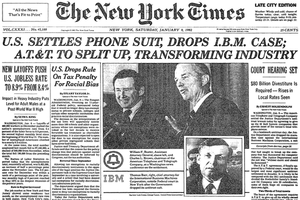
Should Network Goods Be Regulated?
Government aims at low prices, choice, and quality — without hindering productivity. Monopolies still face potential competition; one way to promote it is preventing exclusive access through interconnection.
Essential facilities
An input needed to produce or consume the product — the gateways developers must use to reach users.
Interconnection
Physical linking of networks to essential facilities — prevents a dominant firm from blocking competitors.
Standards and Compatibility
- An industry standard — a common format shared by all competitors (e.g., USB plugs) — eases compatibility and use.
- Firms fight standards wars to become the standard and “own” the network — often via heavy marketing, not productivity.
- Network compatibility lets rival standards coexist — e.g., editing the same spreadsheet across Windows & Mac via Google Docs and Excel.
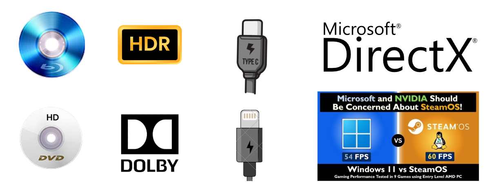
Apple in the Antitrust Spotlight
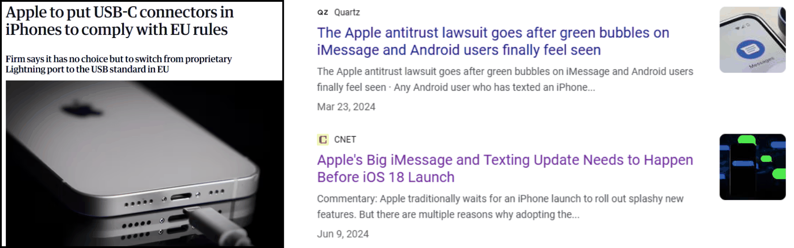
DOJ, 2024. Alleges Apple maintains a smartphone monopoly by engineering switching costs — degrading cross-platform messaging, super-apps, smartwatches, and cloud streaming.
EU DMA. Forces the App Store open — sideloading, third-party payments, and interoperability — treating it as an essential facility.
The core question: is the ecosystem a product people love, or a moat that blocks rivals? The remedy is interconnection, not breakup.
The Regulation Dilemma
Every fix has a cost: break up a platform and you may destroy the network value; force data-sharing and you may erode privacy; cap prices and you get shortages (Ch 7).
Markets self-correct? MySpace, Friendster, Netscape all fell. Contestability + new entry may discipline platforms.
Or too slow? Network effects + switching costs + data moats may make self-correction too rare to wait for.
Misconception: “Big tech are natural monopolies — just break them up.” Network effects create winner-take-all tendencies, not inevitability.
Can Poor Regulation Be Worse Than None?
Regulation aims to stop the exploitation of essential facilities — but a clumsy fix can cost more than the problem. Regulatory cost example: wireless-contract exclusivity with phone makers limits consumer choice.
Disaster case — California electricity crisis (2000–01). The state’s price cap acted as a price ceiling (Ch 7).
Shortages. Quantity demanded exceeds quantity supplied — the rolling blackouts.
Misallocation & search costs. Resources go to the wrong uses; consumers waste time chasing the scarce good.
Quality decay. With incentives capped, the controlled product deteriorates over time.
Poorly designed rules can inflict greater harm than the failure they target — deadweight loss + shortages. Weigh benefits vs costs; sometimes no regulation is better. Can a network be efficient and secure without regulation?
Appendix: A Network Without a Center — Blockchain
Blockchain — a decentralized, distributed ledger. Instead of one company’s server, the data lives on thousands of nodes worldwide, each holding a cross-checked copy. A network good with no owner.
Security by decentralization. Every node cross-references the ledger, so altering it means hacking thousands of copies at once.
Uses. Crypto (Bitcoin) today; tracking supply chains, health records, and secure elections next.
Self-governed. Rules are set by users, not government — raising money-laundering & illegal-use concerns.
Governments can ban certain uses, but cannot regulate the blockchain itself. Networks now power communication, remote work & study, and global commerce — and they’ll keep raising living standards.
Appendix: The Economics of AI Products
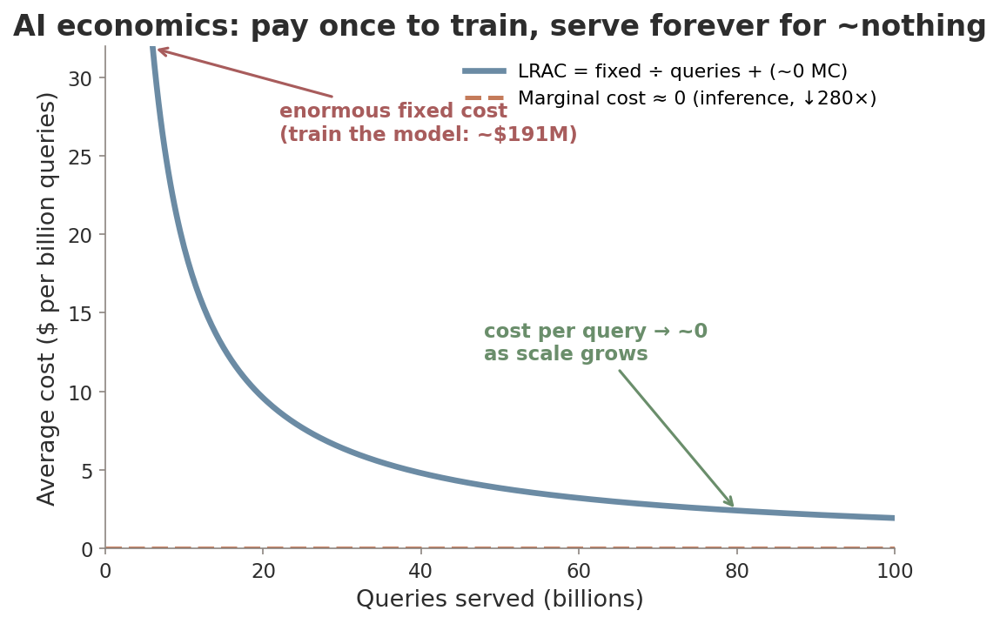
Extreme fixed cost: GPT-4 ~$78M, Gemini ~$191M, Anthropic $12B+ in cumulative compute.
Near-zero marginal cost: inference fell 280× (Nov 2022 → Oct 2024). Train once, serve forever.
High barrier + infinite scale → natural oligopoly. But open-source (Llama, Gemma) is a public good (Ch 17) that erodes the moat.
Key Takeaways
1. Network effects make value rise with users, creating tipping points & winner-take-all — but not always.
2. Platforms are two-sided markets; optimal pricing subsidizes one side, extracts from the other.
3. The take rate is the platform’s cut — and it rises as both sides get locked in.
4. Teasers, lock-in, versioning & bundling build and defend network positions.
5. Data flywheels are self-reinforcing moats — powerful, but with diminishing returns.
6. Regulating platforms means balancing network value against unchecked power — no clean answer.
That’s the course. From a single price in Chapter 4 to planetary-scale platforms — the same tools, all the way up.
Connections
Building On
- Ch 9: Coase, economies of scale, ~0 MC
- Ch 11: Market power & price discrimination
- Ch 12: Switching costs & lock-in
Pulling In
- Ch 13: Streaming oligopoly → platforms
- Ch 16/17: Externalities & public goods (open AI)
- Ch 18: Dark patterns & the Iliad Flow
One idea closes the book: markets run on connection — and connection, once it concentrates, becomes power.
Exit Ticket
Under Metcalfe’s Law, a network’s value is V = k · n(n−1)/2 with k = $0.10 per connection.
Compute V for n = 100 and n = 1,000. When users grow 10×, value grows roughly how many times? One line of work.
Submit on Canvas. 3 minutes.